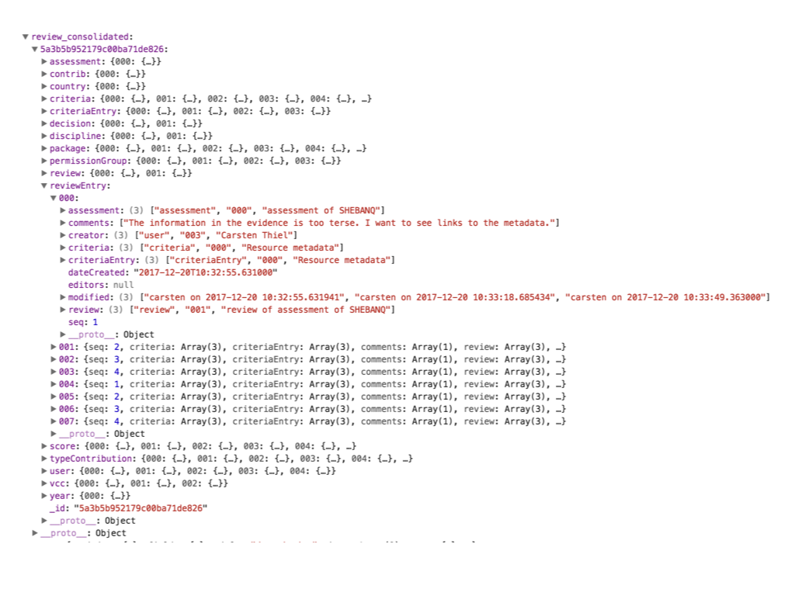

Business Logic¶
Here we document the functionality of the app from the perspective of the users and stakeholders. We focus on the scenarios that are supported.
N.B.:
(✗) Items marked with a single ✗, are not implemented yet, but are expected to make to the delivery on 2017-12-31.
(✗✗) Items marked with a double ✗, are not expected to be implemented before the delivery on 2017-12-31. They may or may not be implemented in 2018.
Contributions¶
A contribution is a piece of work in Digital Humanities, delivered by a person or institute, and potentially relevant to the European DARIAH research infrastructure. The national members of DARIAH may add such a contribution to their agreed budget of in-kind contributions to DARIAH as a whole. This makes it necessary to assess contributions against a set of well-defined criteria.
Assessment scenario¶
Contributions may represent diverse efforts such as consultancy, workshops, software development, and hosting services. This asks for a diversification of contribution types and associated criteria. Moreover, types and criteria may change over time, but during an assessment and review cycle they should be fixed. The assessor of a contribution (from now on called applicant) needs to state how that contribution scores for each relevant criterion, and for each score, evidence must be given.
typeContribution is the table with the set of contribution types.
criteria is the table with the individual criteria, where each criteria can be associated with one or more types.
package is the table of fixed constellations of types and criteria. At any point in time there are one or more active packages, usually just one. A package defines a set of contribution types, and a set of criteria. Every criterion is linked to a number of contribution types, meaning that the criterion is relevant to contributions of those types and no others. Every criterion is associated with exactly one package, hence the package ultimately determines the mapping between types and criteria.
A package has a validity interval, i.e. a start date and an end date. A package is active at a point in time, if that point in time is inside the validity interval. The types of an active package are the active types, and its criteria are the active criteria. Technically, more than one package can be valid at the same time. In that case, the sets of active types and criteria are the union of the sets of types and criteria for each active package. But the intention is that there is always exactly one active package.
Other components may call workflow functions in order to determine what the active packages, types and criteria are, so they can render inactive and active ones in different ways.
Assessing¶
Applicants with write-access to a contribution can add a self-assessment to a contribution. A self assessment is a record in the assessment table, and consists of a few metadata fields.
When an assessment record is created, additional detail records will be
created as well. These are criteriaEntry records. For each assessment, there
is a fixed set of criteriaEntry records. This set is determined by the
currently active set of criteria: one criteriaEntry record will be created per
active criterion.
A criteriaEntry record has a field for choosing a score and a text field
for entering the evidence. Scores are defined in yet another type of record.
Scoring¶
The scores for a criterion are entered in with the help of score records,
which are detail records of criteria. Scores have a number, typically 0, 2,
4, and a short description, typically None, Partial, Full, but the
number and nature of scores may vary freely between criteria.
The score of an assessment as a whole is the sum of the individual scores
expressed as percentage of the total amount of points that can be assigned. A
temporary overall score is obtained by treating unfilled scores as having value
0.
However, some criteria may allow scores with a value -1 (non-applicable). If
an assessment assigns that score to a criterion, 0 points are added, but points
missed from this criterion will be subtracted from the total score, so that this
criterion will not be counted in the average.
Example: Suppose there are four criteria, A, B, C, D.
A, B, and C have scores 0, 2, and 4.
D has scores -1, 0, 2, 4.
Now there are two contributions U and V, with scores as follows:
| Criterion | contrib U |
contrib V |
|---|---|---|
| A | 4 | 4 |
| B | 4 | 4 |
| C | 4 | 4 |
| D | -1 | 0 |
| sum | 12 | 12 |
| total | 12 | 16 |
| score | 100% | 75% |
See how U does better than V although they have an equal number of points. But for U criterion D does not count, while for V it counts, but the score is 0.
N.B. Not all criteria will allow -1 values!
Review scenario¶
After a contributor has filled out an assessment, (s)he can submit it for review. The office will select two reviewers, and they will get access to the self assessment.
Upon asking for review, the assessment and the contribution will be locked temporarily.
The two reviewers have distinct roles:
- reviewer 1 (expert) inspects the assessment closely and advises a decision;
- reviewer 2(final say) makes the decision.
(✗✗) Both reviewers can enter comments in a comment stream, which are detail records of the assessment.
The advice/decision that can be made by the reviewers is
- approve
- reject
- revise
Consolidation¶
In all cases, a consolidated version of the reviews will be made. This records contains the information of both of the reviews, the assessment and the contribution. Consolidated means that all links to related records have been replaced by the concrete values found in those records at that time. Consolidated records do not contain fields that point to other records, only concrete text/number/datetime values.
Currently, the consolidated version is stored in the database as a tree of documents. All these documents are consolidated versions of documents that the final review document refers to, directly or indirectly. Because the final review refers to the self-assessment, and the self-assessment to both reviews, the other review is also included in the tree.
The output below shows how this tree ends up in the client, on the application
state. It is shown by the console of the web page, in development mode. You can
see how this tree is a mini database of records and related records, hanging
together with simple identifiers of the form "ddd" where d is a digit.

It is not completely trivial to distil a nice, well-readable document out of this. What we need is a consolidation template, that grabs the relevant data from this mini-database. From that template, we can produce first HTML and then PDF. Rather than a single template, we should make templates for each of the tables involved.
(✗✗) Consolidated records will be stored as PDF and viewable from within the app. What needs to be done here, is to write templates that select the desired information from the tree of consolidated documents.
Approve¶
A consolidated review-set will be stored in a collection called
reviewConsolidated. Apart from the consolidated materials of the reviews, the
assessment and the contribution, it contains the _id of the live
contribution, and a time stamp of the moment of consolidating.
The live assessment will remain immutable, but the live contribution becomes mutable again.
So the consolidated review-set contains all information upon which the outcome of the assessment is based, even if the live contribution undergoes subsequent development.
The reason why contributions will not be permanently immutable is this: contributions are likely to continue to evolve after assessment; their metadata (among which URLs and email addresses) may change, and the contributor may wish to keep the data for his/her contribution up to date, especially in view of data exchange between the contribution tool and the Market Place.
Reject¶
A consolidated version of the review will be stored.
The live assessment will remain immutable, but the live contribution becomes mutable again.
(✗✗) The applicant may enter an objection. In that case the back office will ask a second opinion and take appropriate action, which might lead to a change of decision, e.g. towards revise, or to a new review by other reviewers.
Revise¶
The live assessment and live contribution will become mutable again, and the applicant can modify both in response to comments by the reviewers. When (s)he is finished, the applicant can submit the modified version.
Trails¶
After an assessment and review process, the system contains a trail of all that has gone on in the following form:
- live contribution The contribution record is still in place, mutable, and contains only the actual situation
- live assessment The assessment record is still in place, but immutable.
- (✗✗) live comments trail
- (✗✗) by reviewers: comments and suggestions for modification
- (✗✗) by the applicant: to state an objection
-
(✗) consolidated versions of assessments There are snapshots of the assessment at pivotal points in time:
- (✗✗) when the assessment has been offered for review
- (✗✗) when reviewers have made decisions
- (✗✗) when second opinions have been asked and given
Management information¶
The app compiles management information of a statistical nature, both to the public and authenticated users. The quantity of information given is dependent on user rights.
The public can see contributions, but not assessments and reviews, except the ones that are finalized with outcome "accept".
(✗) In those cases, the assessment score is also visible.
Left-overs¶
Email notification¶
It might be handy to send emails to users involved in assessing and reviewing to notify them that a key event has occurred, such as the submission of an assessment, the appointment of reviewers, the decisions by reviewers.
Push notification¶
When an assessor calls up his/her assessment, and at the same time a reviewer takes a decision, this fact is not pushed to the assessor's browsing session. Only when the assessor feels like refreshing the page, (s)he will see the effects of that decision.
We need some mechanism of hinting the user that important changes have been made and a refresh is needed.
I know it can be done ( socket, python-socket ) but it requires a bit of research to find the best way to do it.